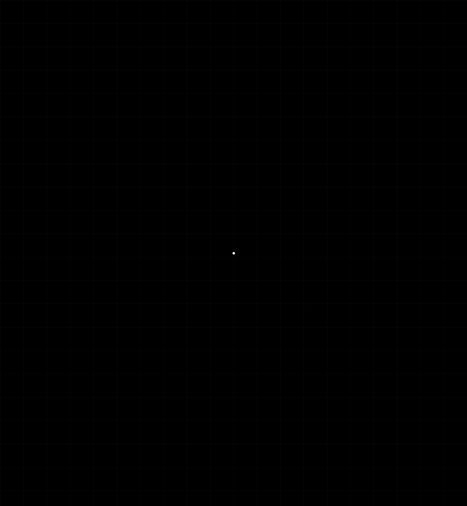
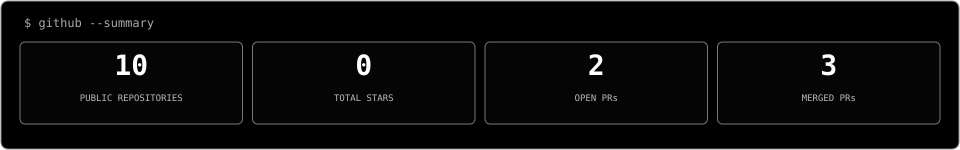
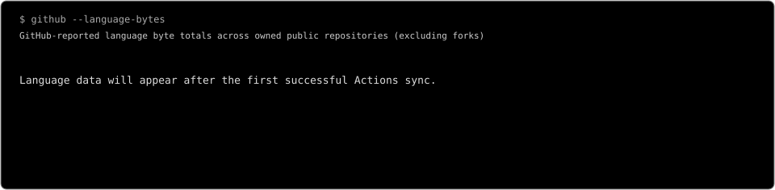
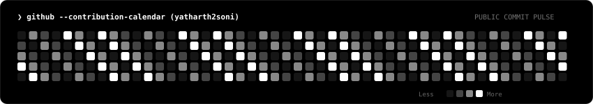

Khanan Suraksha
A bilingual mining-safety and governance platform for reporting, inspections, compliance workflows, and geo-tagged field observations.
React · NestJS · PostgreSQL · PostGIS
View repository →
I'm Yatharth Soni, a BTech Computer Science student at LNMIIT interested in practical projects, problem-solving, and open-source development. I enjoy exploring unfamiliar codebases and improving them through focused features, bug fixes, tests, themes, and documentation.
A bilingual mining-safety and governance platform for reporting, inspections, compliance workflows, and geo-tagged field observations.
React · NestJS · PostgreSQL · PostGIS
View repository →A programming analytics dashboard focused on contest trends, performance insights, topic coverage, and problem-solving consistency.
React · TypeScript · Chart.js
Browse project repositories →| REPOSITORY | PULL REQUEST | STATUS |
|---|---|---|
| freeCodeCamp | Fix curriculum quiz spacing #71054 | MERGED |
| agy-powerline | Add Catppuccin Macchiato theme #36 | MERGED |
| label-checker | Run npm ci at start of Copilot sessions #732 | MERGED |
| OpenSRE | Verify remote-agent connection status #88 | OPEN |
| GEARBOx frontend | Update frontend README #416 | OPEN |



